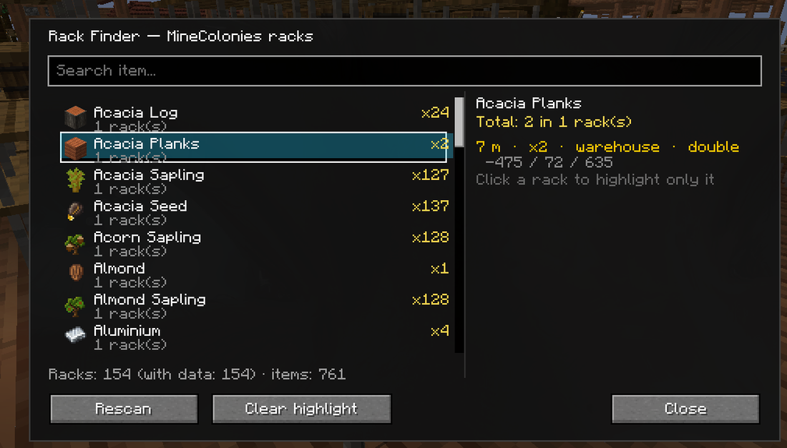
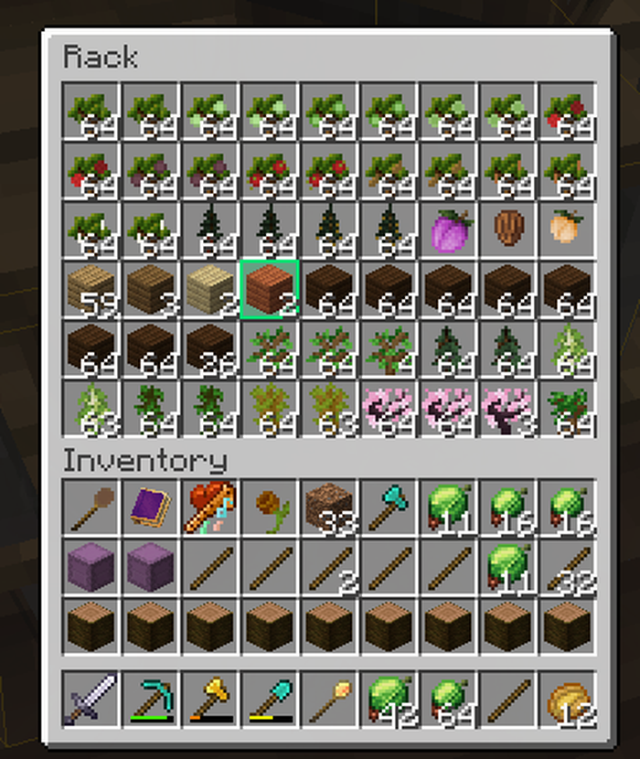
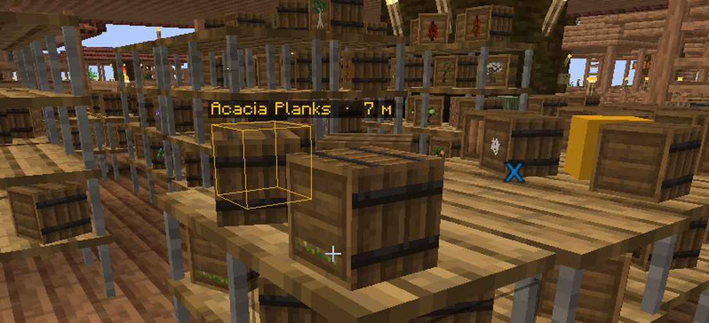

Rack Finder
Stop opening every chest and rack. Press R, type an item name, and every container that stores it — MineColonies racks, vanilla chests, barrels, shulkers — is outlined through walls with its coordinates and distance.
What it does
Built for warehouse colonies where a single item can live in a dozen racks.
Search by item
Type a name or a registry id, walk the list with Up/Down, confirm with Enter. Every container holding that item is listed with the exact amount, and the right-hand list scrolls when there are more results than fit.
Highlight through walls
Screen-space outlines ignore terrain. The nearest rack is golden, the rest cyan.
Coordinates & distance
Each result shows X / Y / Z, distance in blocks (or another dimension) and warehouse/double flags.
Live outline
Open a chest that holds the searched item and it joins the highlight right away — no need to search again. Close-by containers are clipped instead of vanishing.
Vanilla storage
Chests, trapped chests, barrels, shulker boxes, hoppers, droppers, dispensers, furnaces and brewing stands. Vanilla hides their contents from clients, so a container is remembered the first time you open it.
Works on any server
No server installation, no packets of its own. Servers and other players never see the mod.
Slot frames
Pick an item and matching slots are framed in green inside the rack window (and any container), so the stack itself is easy to spot.
Remembers your query
The last search text comes back when you reopen the window, and the small "x" clears the field. The highlight is applied only when you confirm an item.
Remembers everything
The index is saved to disk per world, so racks in unloaded chunks stay searchable.
Live HUD
A small corner list keeps the nearest matches visible while the highlight is active.
How it works
Everything comes from data the client already has — that is why no server component is required.
Chunk packets
Loaded chunks arrive with the NBT of their block entities. MineColonies' rack saves its full inventory there (inventory, empty, inWarehouse), so the mod can read it directly.
Opened racks
When you open a rack, the server sends the fresh slot contents; the mod records the snapshot and refreshes its entry.
Local index
Item → racks is kept in memory and stored in config/rackfinder/racks-<world>.json. Searching is instant and works offline.
Interface



Install
Forge 1.20.1 client. MineColonies is optional — without it the mod simply finds nothing.
- Download
rackfinder-1.20.1-<version>.jarfrom Releases. - Put it into your
mods/folder (Forge 1.20.1, client only). - Start the game and press
R.
Key already taken? Options → Controls → Key Binds → Rack Finder.
Commands & config
Client commands
/rackfinder open | open the window |
/rackfinder target | item used for slot frames |
/rackfinder dump | index stats + top items in chat |
/rackfinder rescan | rescan loaded chunks |
/rackfinder save | write the index now |
/rackfinder clear | wipe the index |
Config (rackfinder-client.toml)
scan.radiusChunks | 8 |
scan.fullRefreshSeconds | 120 |
highlight.maxHighlights | 128 |
highlight.hudList | true |
inventory.slotHighlight | true |
storage.autoSaveSeconds | 30 |
Limitations
- MineColonies racks are indexed automatically from loaded chunks; vanilla containers only after you open them once. Ender chests and container minecarts are not supported.
- Containers in unloaded chunks use the last saved snapshot.
- Contents may be stale if a chunk stayed loaded while colonists moved items; press Rescan or open that rack.
- A double rack is two blocks and therefore appears twice (they are two real blocks).
Build from source
git clone https://github.com/Redd1ssKA/minecolonies-rackfinder.git
cd minecolonies-rackfinder
export JAVA_HOME=/path/to/jdk17
./gradlew build # build/libs/rackfinder-1.20.1-<version>.jar
./gradlew runServer # headless self-test of the NBT parser, index, search, persistence